<!-- ============================================ --> <!-- タイトル --> <!-- ============================================ --> ### 潮汐力から理解するリーマン曲率 #### 〜時空の曲がりを直感的に〜 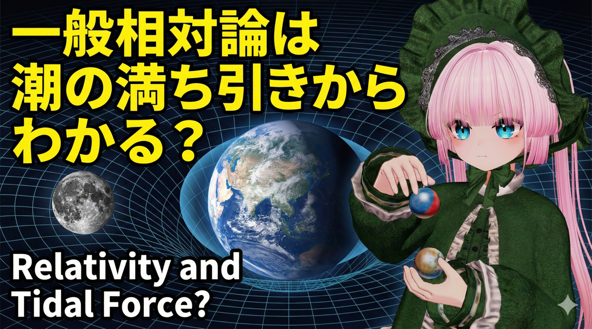 --- ### 自己紹介 <div class="profile-container"> <div class="profile-left"> * 真名海さめ * ⚛️ VRChat物理学集会の主催 * 🧑🎓 社会人学生として通信制大学在学中 * 得意分野: * 📸 コンピュータビジョン (画像認識/点群処理) * 🌍 空間情報処理 (地理情報/リモートセンシング) * ☁️ クラウドインフラ設計/IaC (AWS, GCP) * 学生時代は地球物理学を専攻 * 地球観測技術のエンジニアとして活動中 </div> <div class="profile-right"> <img src="assets/images/icon_circle.png" alt="avatar" height="350px" width="350px"> </div> </div> --- ### 今日話すこと <div class="simple-box"> * 2つのボールを落とす思考実験から始めて… * **等価原理** — 重力と加速度の関係 * **潮汐力** — 自由落下しても消せない「本物の重力」 * **リーマン曲率** — 時空の曲がりの数学的記述 * **平行移動** — 曲がった空間での不思議な現象 </div> <br> <div class="highlight-box"> ※ 共変微分やクリストッフェル記号は使わず、直感的に理解していきます </div> --- <!-- ============================================ --> <!-- 1. 導入・つかみ --> <!-- ============================================ --> ## 重力で体が引き伸ばされる？ --- ### 2つのボールを落としたら？ <div class="simple-box"> * 2つのボールを横に並べて同時に落としたら？ * 平行に落ちてぶつからない？ * 厳密にはちょっと違う！ * 一般相対論の核心**「時空の曲がり」**の影響 </div> 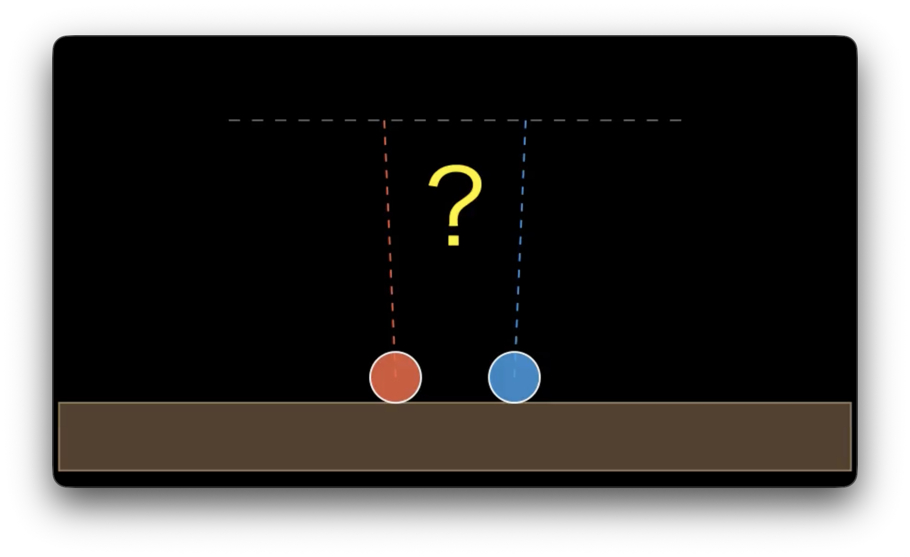 <!-- SRT: 1-4 --> --- ### あなたの体は伸びている？ <div class="container"> <div class="col-left"> <div class="simple-box"> * 頭と足では地球の中心からの距離がわずかに違う * 足の方が地球に近い → ほんの少し強い重力 * その結果、体は**縦に少し引き伸ばされている** </div> </div> <div class="col-right"> 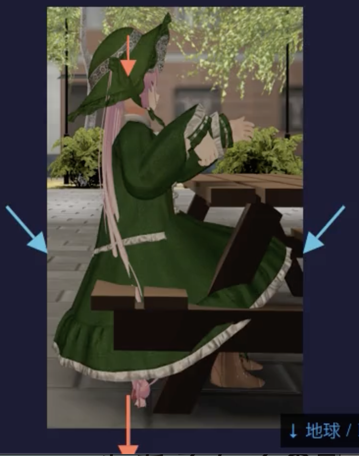 </div> </div> <div class="highlight-box"> この「引き伸ばし」を生む **時空の曲がり** と **潮汐力** が一般相対論の核心 </div> <!-- SRT: 5-10 --> --- ## 等価原理 --- <!-- ============================================ --> <!-- 2. 等価原理 --> <!-- ============================================ --> ### 重力ってそもそも何？ <div class="simple-box"> * 飛行機に乗っていて突然エンジンが止まったら？ * 自由落下する飛行機の中 → **無重力状態**を体験 </div> 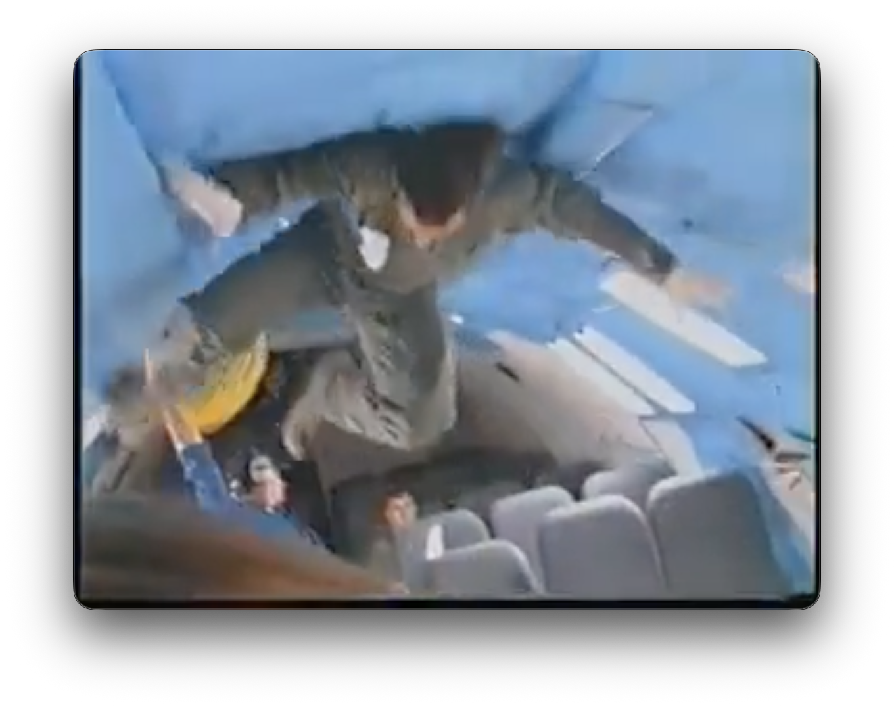 <!-- SRT: 13-17 --> --- ### 宇宙ステーションの「無重力」 <div class="container"> <div class="col-left"> <div class="simple-box"> * 宇宙飛行士が浮いているのも同じ原理 * 宇宙ステーションは地球の周りを**落ち続けている** * 中の人は重力を感じない → 無重力状態 </div> </div> <div class="col-right"> 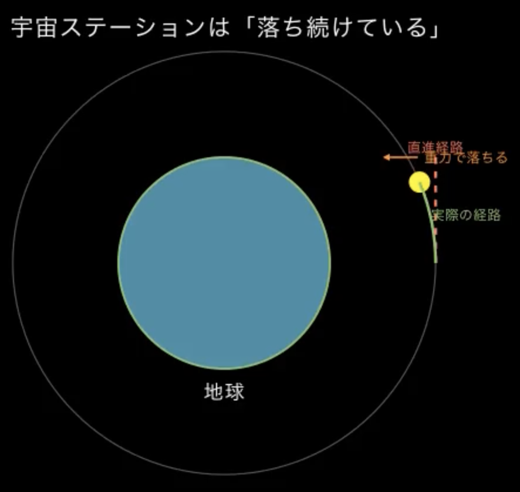 </div> </div> <div class="highlight-box"> 自由落下している人にとって、**「重力は消えた」**ように感じられる </div> <!-- SRT: 18-20 --> --- ### 等価原理 <div class="simple-box"> * 落ちている飛行機の中？宇宙空間？ * → **区別することができない！** </div> 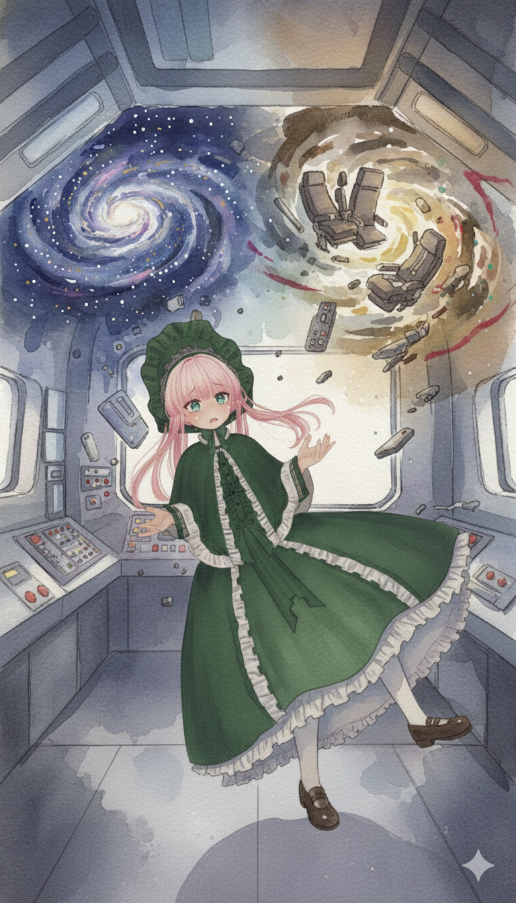 <div class="highlight-box"> **等価原理**: 重力と加速度は局所的には区別できない </div> <!-- SRT: 21-25 --> --- ### 消せない「本物の重力効果」 <div class="simple-box"> * 自由落下で消せるなら重力は本当に存在するの？ * 自由落下では消せない「**本物の重力効果**」がある * それが **潮汐力** </div> 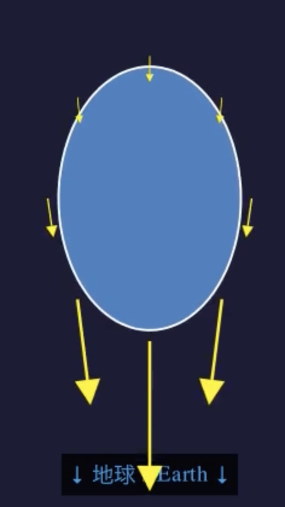 <!-- SRT: 26-29 --> --- <!-- ============================================ --> <!-- 3. 潮汐力の実験 --> <!-- ============================================ --> ## 自由落下するボールから潮汐力を考える --- ### 2つのボール — 横に並べて落とす <div class="container"> <div class="col-left"> <div class="simple-box"> * 2つのボールを横に並べて地球に向かって落とす * 平行に落ちていつまでもぶつからない？ * **いいえ！** — 地球は丸い * 重力は地球の**中心**に向かって働く * → 2つのボールは少しずつ**近づいていく** </div> </div> <div class="col-right"> 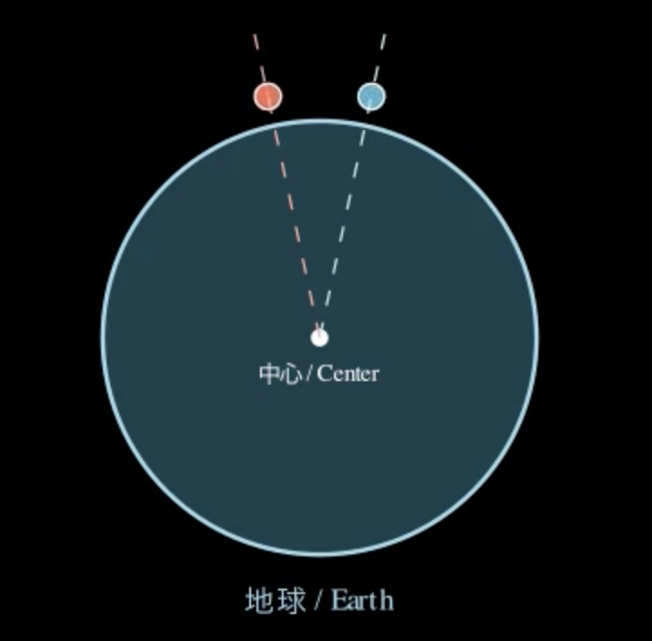 </div> </div> <!-- SRT: 31-39 --> --- ### 2つのボール — 縦に並べて落とす <div class="container"> <div class="col-left"> <div class="simple-box"> * 2つのボールを縦に並べて落とす * どちらが速く落ちる？ → **下のボール** * 地球に近い方がより強い重力を受ける * → 2つのボールは落下しながら少しずつ**離れていく** </div> </div> <div class="col-right"> 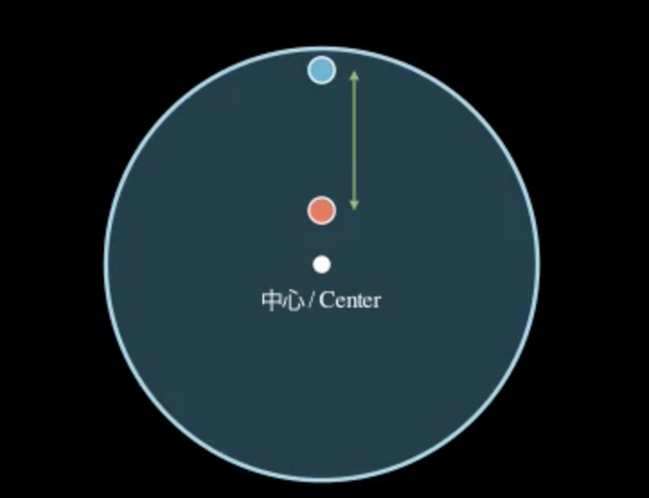 </div> </div> <!-- SRT: 40-45 --> --- ### 落下する飛行機の中から見ると？ <div class="simple-box"> * ボールは浮いて見える * でも横に並べたボールは**近づいていく** * 縦に並べたボールは**離れていく** * **無重力のはずなのにボールが勝手に動く！** </div> <img src="assets/images/TidalForceDefinition.png" alt="TidalForceDefinition" height="380px"> --- ### 潮汐力とは？ <div class="simple-box"> * 潮汐力は重力が場所によって違うことで生じる * 自由落下しても消すことができない重力効果 </div> <br> <div class="highlight-box"> * これこそが **潮汐力** * 重力が場所によって違うことで生じる、自由落下しても消すことができない重力効果 </div> <!-- SRT: 46-53 --> --- ### 潮汐力の身近な例 <div class="container"> <div class="col-box-left"> #### 🌊 潮の満ち引き * 地球が受ける月の重力は、月に近い側と遠い側で**強さが違う** * その差が海水を引っ張って潮の満ち引きを起こす </div> <div class="col-right"> 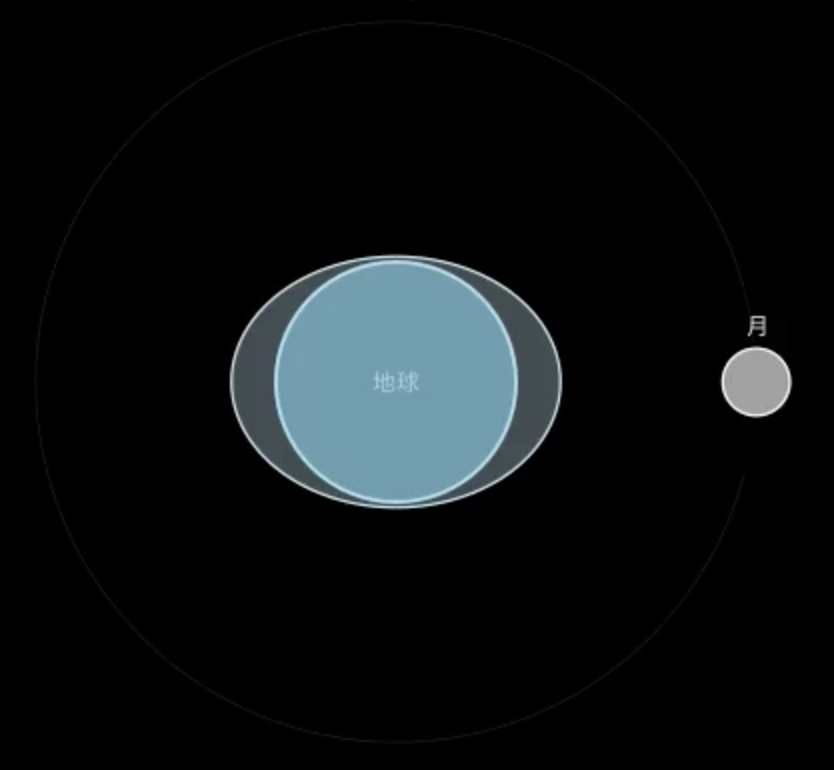 </div> </div> <br> <div class="highlight-box"> 潮汐力が「**本物の重力効果**」！ </div> <!-- SRT: 54-62 --> --- ### 🕳️ スパゲッティ化 <div class="col-box-right"> * ブラックホールの近くでは頭と足で受ける重力の差が**とてつもなく大きい** * スパゲッティみたいに引き伸ばされてしまう </div> <div class="container"> <div class="col-left"> <img src="assets/images/Spaghettification_(from_NASA's_Imagine_the_Universe!).png" alt="Spaghettification" height="400px"> </div> <div class="col-right"> 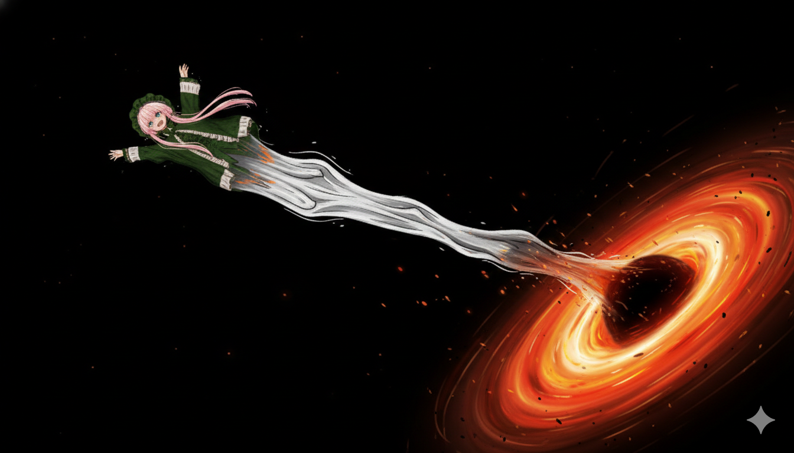 </div> </div> --- ## 重力 = 時空の曲がり = 潮汐力 --- <!-- ============================================ --> <!-- 4. 時空の曲がり --> <!-- ============================================ --> ### 潮汐力 = 時空の曲がり <div class="simple-box"> * さっきの2つのボールの実験を思い出すと…… * 横 → 近づく、縦 → 離れる * 自由落下する飛行機の中で「無重力なのにボールが動く」 * **これこそが時空の曲がり** </div> 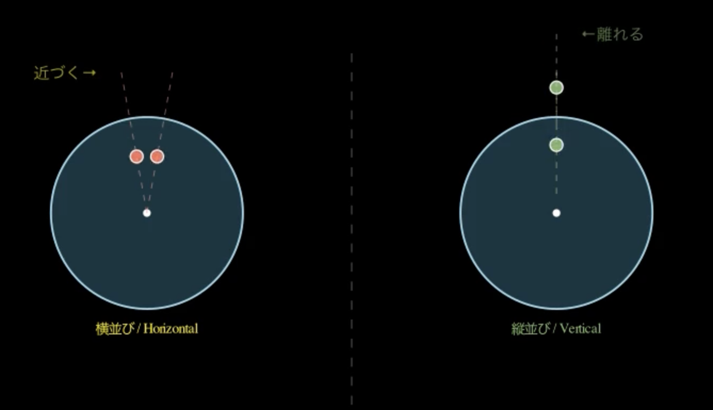 <!-- SRT: 63-69 --> --- ### 平らな空間 vs 曲がった空間 <div class="container"> <div class="col-box-left"> #### 平らな空間 * 平行線はどこまでいっても平行のまま </div> <div class="col-box-right"> #### 曲がった空間 * 平行線が近づいたり離れたりする * 丸い地球がまさに身近な例 </div> </div> 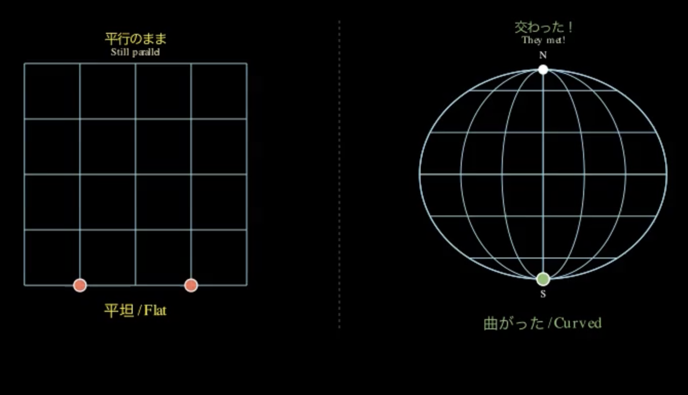 <!-- SRT: 70-72 --> --- ### 測地線と測地線偏差 <div class="simple-box"> * **測地線**: 自由落下する物体が進む道 * 自由落下している物体は、測地線に沿って「まっすぐ」最短距離を進んでいる * **測地線偏差**: 2本の測地線の間隔が変化すること </div> <div class="container"> <div class="col-left"> 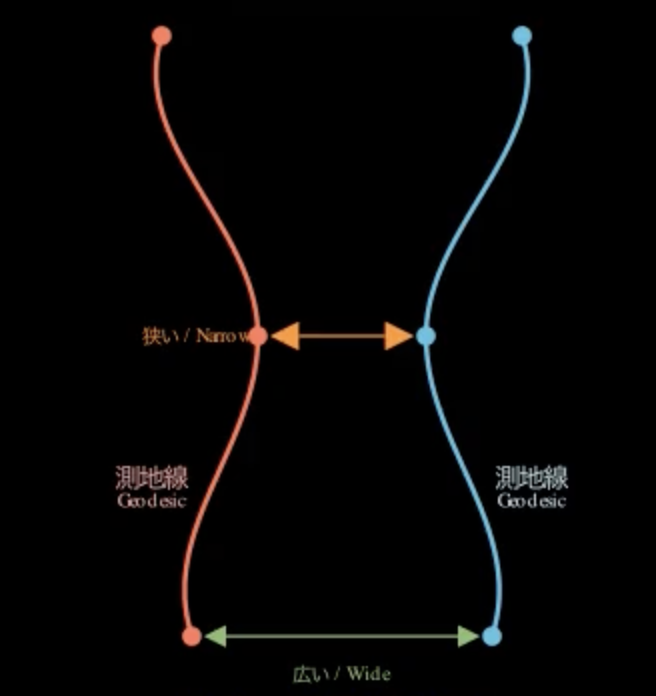 </div> <div class="col-right"> 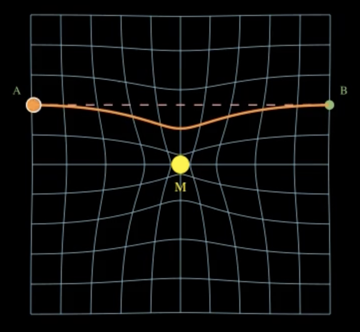 </div> </div> <!-- SRT: 73-79 --> --- ### リーマン曲率 <div class="simple-box"> * 19世紀の数学者**ベルンハルト・リーマン**が考案 * 2本の線がどれだけ近づいたり離れたりするかを数学的に記述 </div> <div class="container"> <div class="col-left"> <img src="assets/images/Georg_Friedrich_Bernhard_Riemann.jpeg" alt="Georg_Friedrich_Bernhard_Riemann" height="370px"> </div> <div class="col-right"> <div class="highlight-box"> **リーマン曲率**: 近くを通る2つの自由落下物体がどれだけ近づいたり離れたりするかを測る量 </div> --- ### アインシュタインの発見 <div class="container"> <div class="col-left"> 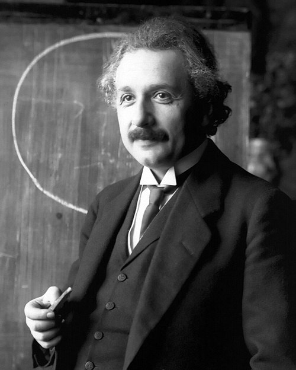 </div> <div class="col-box-right"> * アインシュタインは、**リーマン曲率こそが時空の曲がりであり、重力そのもの**と考えた * 学生時代の同級生で数学者の**マルセル・グロスマン**の助けを借りて、リーマン幾何学を一般相対論に応用した </div> </div> <!-- SRT: 80-84 --> --- ### 潮汐力 = 測地線偏差 = リーマン曲率 <div class="simple-box"> * 潮汐力を生むのは、測地線偏差による重力の差 * 測地線偏差（時空の曲がり）が大きいほど、潮汐力も大きくなる </div> <br> <div class="highlight-box"> 潮汐力、測地線偏差、リーマン曲率は**同じ概念が異なる現れ方をしているだけ** </div> <!-- SRT: 85-90 --> --- <!-- ============================================ --> <!-- 5. 平行移動 --> <!-- ============================================ --> ## 曲がった空間での平行移動 --- ### 平坦な空間での平行移動 <div class="simple-box"> * 部屋の中で南の方角を指さして歩く * ぐるっと一周して戻ってきても、指は元の向きのまま </div> <div class="container"> <div class="col-left"> 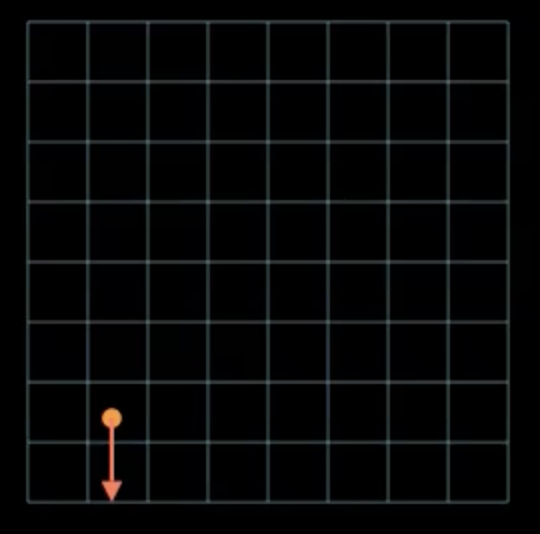 </div> <div class="col-right"> <img src="assets/images/ParallelTransportFlatWithTrace-2.png" alt="FlatSpaceParallelTransport-2" height="360px"> </div> </div> <!-- SRT: 93-95 --> --- ### 球面上の平行移動 <div class="container"> <div class="col-box-left"> 1. 北極点に立って南を指さす 2. 赤道まで歩く 3. 赤道に沿って90°東へ移動 4. 北極点に戻る </div> <div class="col-right"> 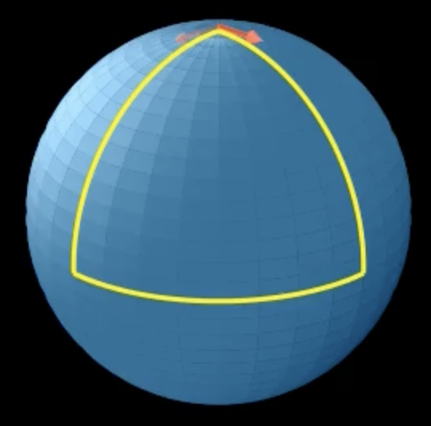 </div> </div> <div class="highlight-box"> **元の向きから90°ずれている！** — 同じ方向を向いていたはずなのに、一周して戻ったら向きが変わっている </div> <!-- SRT: 97-103 --> --- ### 曲がった空間では「まっすぐ」が保てない <div class="simple-box"> * ずっと同じ方向を向いていると思っていても、歩く場所が曲がっていれば同じ方向を維持できない * これこそが「**空間が曲がっている**」ということのもうひとつの意味 </div> <br> <div class="highlight-box"> ブラックホールのような強い重力を持つ天体の周りでは、時空が同じように曲がっている </div> <!-- SRT: 104-106 --> --- <!-- ============================================ --> <!-- 6. まとめ --> <!-- ============================================ --> ### まとめ <div class="simple-box"> 1. 自由落下する飛行機の中が無重力になるように、**重力は打ち消せるように見える** 2. でも消せない本質的な重力の効果がある — それが**潮汐力** 3. これを数学的に記述したのが**リーマン曲率** 4. アインシュタインはこれを「**時空の曲がり**」と考えて一般相対論を築いた 5. 平行移動のような簡単な現象でも曲がった空間では不思議なことが起こる </div> --- ### LT登壇者の募集 <div class="simple-box"> * 物理学集会ではLT登壇者を募集しています！ * どんなジャンルでもOK！ * 興味のある方は物理学集会のDiscordサーバーまで！ </div> <img src="assets/images/qrcode.png" width="200px"> --- ### VRChat博士集会のお知らせ (3/14 21時開催) <div class="container"> <div class="col-box-left"> * Discordサーバーから参加登録できます！ 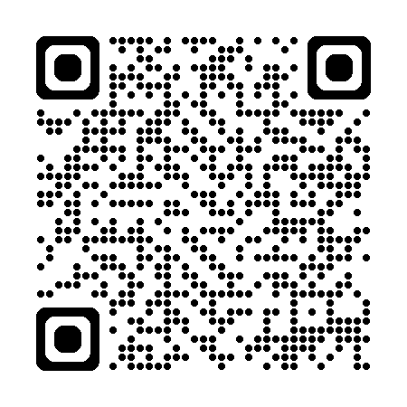 </div> <div class="col-right"> <img src="assets/images/博士集会ポスター.png" height="525px"> </div> </div>